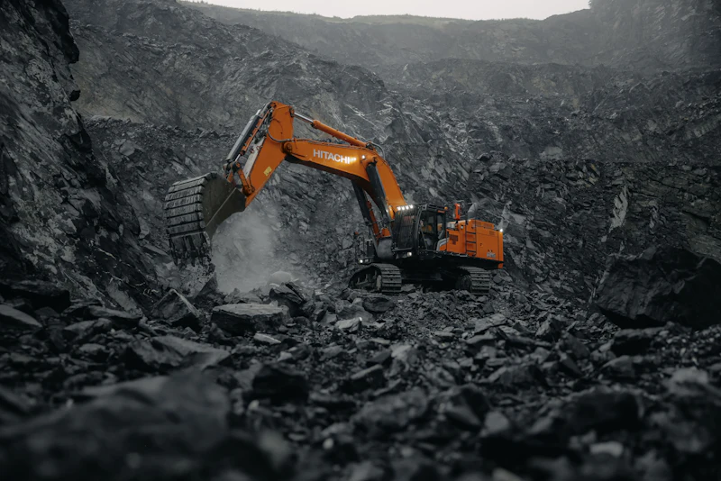
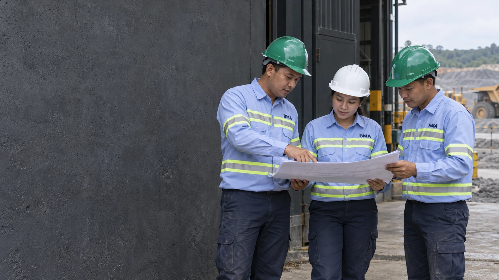
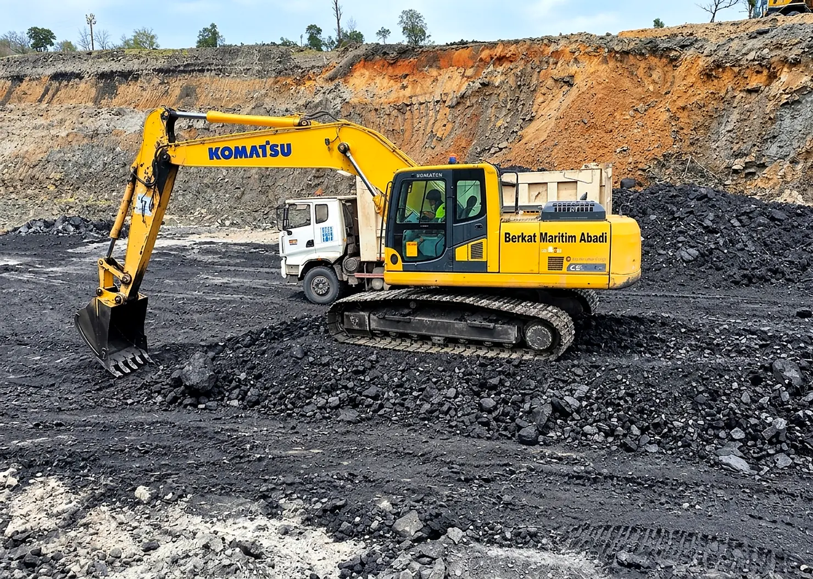
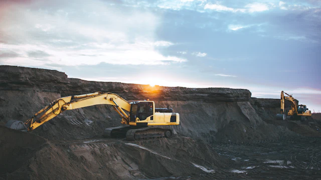
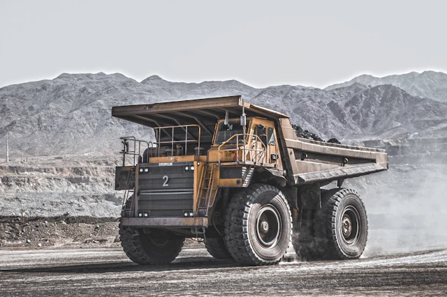
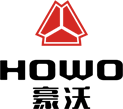
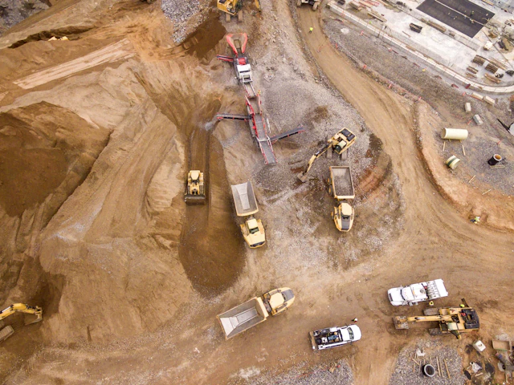
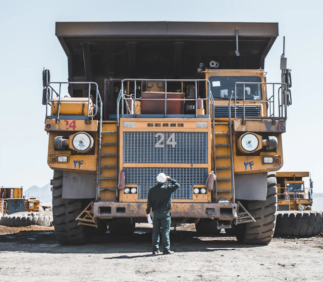
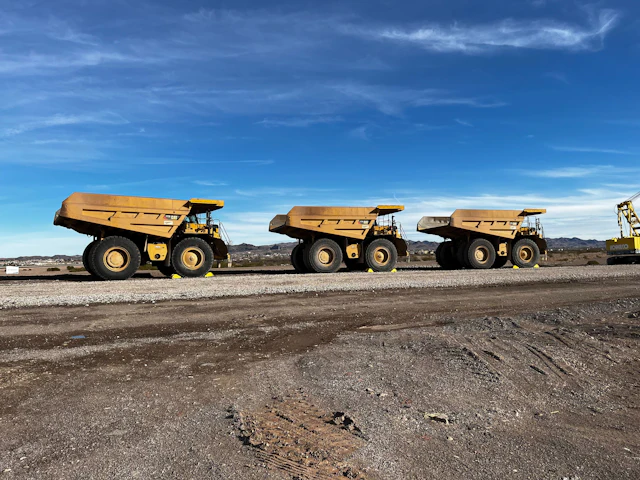

01
Coal Getting
Pengambilan, peremukan, dan penimbunan batu bara untuk mendukung kegiatan produksi pertambangan.

Mitra strategis pertambangan dan logistik.

Profil Perusahaan
PT Berkat Maritim Abadi (BMA) merupakan bagian dari Growin Group yang menyediakan jasa pertambangan, pengangkutan hasil tambang, dan bongkar muat batu bara.
Sejak 2013, kami mendukung kebutuhan operasional dengan mengutamakan keselamatan, profesionalisme, dan efisiensi.
Layanan
Kami mendukung rangkaian kegiatan pertambangan, mulai dari pengupasan lapisan penutup hingga pemuatan hasil tambang ke tongkang.

Pengambilan, peremukan, dan penimbunan batu bara untuk mendukung kegiatan produksi pertambangan.

Pengupasan lapisan penutup, pembukaan lahan, serta pekerjaan galian dan timbunan untuk mengakses lapisan batu bara.

Layanan pengangkutan batu bara, nikel, mineral, dan hasil tambang lainnya untuk mendukung kelancaran distribusi.
Kegiatan operasional BMA didukung alat berat dan kendaraan angkut dari berbagai merek untuk menunjang kebutuhan pekerjaan di lapangan.
Merek peralatan yang digunakan

Publikasi Perusahaan
Informasi mengenai kegiatan operasional, keselamatan kerja, dan kemitraan perusahaan. Artikel dan tanggal yang ditampilkan merupakan materi contoh.

KorporatKoordinasi antarunit menjadi langkah penting untuk menjaga kesiapan proyek dan kualitas layanan di area kerja.

K3Tim operasional mengikuti simulasi tanggap darurat dan penyegaran prosedur keselamatan sebelum memulai aktivitas.

OperasionalIntegrasi hauling, pelabuhan, dan distribusi membantu kelancaran mobilisasi kebutuhan proyek.